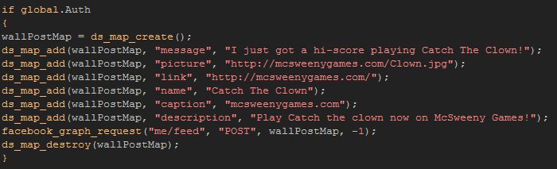

Tutorial
Page 4 of 8
Wall Posts
Now that you have the log in and status working it's time to actually post a message to the wall of the user that is playing the game.
The Facebook API uses json to send and recieve information, and in GameMaker:Studio we will use a ds_map to
store the information and the function facebook_dialog() will convert this map into the necessary format to send to Facebook. Now,
Facebook accept a very wide range of commands and it is highly recommended that you read the supplied documentation explaining these
commands (they can be found here), but for the
purpose of this tutorial we will create a simple wall post with an image, and a comment.
For this step, make an object called "obj_WallPost" and assign it a sprite to act as a button, so that when we click the button it will send a
message to Facebok that will appear on the users page. Once you have done that, we want to add a Left Mouse Button PRESSED
event with the following code:

We will now go through each line of the code and briefly explain what it does:
- First we make sure that the game has been authorised
- Then we make a ds_map to hold the information we need to send.
- We add into the map the message that we want post to the wall.
- The picture is a URL that points to the image we want to post.
- This is the URL link that we want the name to go to when clicked.
- The name of the link that should be clicked (essentially the title of the post).
- This caption appears beneath the name.
- The description is usually some descriptive text related to the game or product.
- The actual GameMaker:Studio graph post. The first part is the graph path to use (see the section "Publishing"
here), then comes the http Method to use (normally POST and GET but DELETE is accepted by Facebook too, but that may depend on the browser).
The next part is the ds_map and finally you have the option of adding another ds_map to collect the response json. However this is not necessary
in this case as it is a simple wall post that we are doing.
- Finally se destroy the ds_map as it is no longer needed.
Once you have filled in the necessary details for your test game, you can press the run button and test it on your device. Note that pressing the button
will have no visible effect on the device itself. This is because we have used the publish_stream permissions which means you by-pass
the normal request dialogues and post straight to the wall, but if you refresh your user Facebook page on your computer you will now see the wall post in all
it's glory.
Click on the Next button to go to the next page of the tutorial.